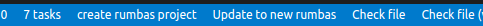

Getting Started
This Getting Started Guide will learn you
- how to setup your own rumbas repo on Github, with a complete development environment using Github Codespaces
- to write and run your first question
- to write and run your first exam (TODO?)
- to get familiar with possible next steps to make more advanced use of rumbas (TODO).
It assumes a minimal familiarity with VSCode.
Create an empty rumbas repository
While you can use rumbas locally on your PC, the quickest way to get started is to use a Github Codespace from a template:
-
Create a free Github account if you don't have one yet.
-
Click on
 and accept all settings and clich the green 'Create codespace' button. Don't panic on the 'Codespace usage for this repository is paid for by
and accept all settings and clich the green 'Create codespace' button. Don't panic on the 'Codespace usage for this repository is paid for by ' message: basic usage is free, and you'll be warning if charges would apply after using your codespace for hours... -
You now have a VSCode interface in your browser with a mostly empty folder, but with the most recent rumbas version installed and ready to go.
- Open a terminal, and run
rumbas --versionto check if the setup is working.
- Open a terminal, and run
Note that you won't be able to easily save your work. If you've decided to make more serious use of rumbas, consider creating your own repo, and/or run rumbas locally on your PC with Docker:
-
Go to https://github.com/m8rex/rumbas-codespaces-template, and click on the green 'Use this template' button to create your personal rumbas-repository by choosing the 'Create a new repository' option.
- Place it under your personal account
- Choose a name
- Decide whether it should be a private or public repo.
- You'll be sent to your new repo.
-
In your newly created repo, click on the green 'Code' button, use the 'Codespaces' tab and click on the green 'Create codespace on main' button (or on the plus icon if you've already used Codespaces before...).
More information and different options to use rumbas can be found in the installation guide
Initialise you new rumbas project
Run the command rumbas init to initialise the a rumbas project.
You can either do this in a Terminal, or click on the Initialise Project button on the taskbar at the bottom of the screen.

This command will create a bunch of folders and files that you can explore later. Important for now is that all your questions will go in separate files in questions, and all your exams similarly go into files in the folder exams.
The folder structure of a rumbas project is important. Some names are reserved and have a special meaning.
- A folder named
defaultsthat contains the default specifications - A folder named
questionsthat contains the questions - A folder named
examsthat contains the exams - A folder named
themesthe contains your custom themes - A folder named
custom_part_typesthat containscustom_part_types - A folder named
resourcesthat contains the resources that are used in exams or questions.
Create our first question
Create a first question about the price for shoes after a discount by pasting the appropriate YAML content into a new file questions/shoes.yaml.
- Create the file
questions/shoes.yaml(this is ashoes.yamlfile in thequestionsfolder), (e.g. by right clicking on thequestionsfolder, selectingNew Fileand naming the fileshoes.yaml) - Add the following yaml code to the
questions/shoes.yamlfile (with Copy/Paste):
{{#include ../../examples/percentages-with-templates/questions/
percentages-shoes-without_templates_en.yaml}}
Compile our first question
Compile the question.
You can either run the command rumbas compile questions/shoes.yaml in a Terminal,
or click the Compile file button on the taskbar at the bottom of the screen.
(The Compile filebutton will compile the current file !)
There will now be a completely standard Numbas preview in the folder _output/en/questions/shoes.
View and test your first question
Start the Live Server extension by clicking on the Go Live button on the taskbar at the bottom of the screen. It is located on the right side.
This will open a browser window with the contents of the _output folder.
Click through the folder structure to reach you question.